第一部分 · 无模型的因果推断 · Part I — Causal inference without models
第 9 章 · 测量偏倚与"非因果"图
Hernán MA, Robins JM（2020）. Causal Inference: What If. Chapter 9. 本页为中文全文翻译，附译注。
假设有位研究者做了一项随机化试验，要回答这样一个因果问题："一个人抬头看天，会让路人也跟着抬头吗？"她发现自己抬头与路人抬头之间存在一个很弱的关联。这个弱关联反映的是一个弱因果效应吗？按随机化试验的定义，这项研究不应有混杂偏倚。而且也不会有选择偏倚，因为所有路人的反应——看了还是没看——都被记录下来了。但还有另一个问题：负责记录路人反应的那位合作者犯了很多错。具体地说，她漏掉了一半"路人抬头了"的情形，把这些反应记成了"没抬头"。于是，即便处理（研究者抬头看天）真的对结局（别人抬头）有很强的效应，对结局的错误分类也会稀释处理与（被错测的）结局之间的关联。
当研究数据的测量过程导致处理与结局之间的关联被削弱或被加强时，我们就说存在测量偏倚。由于测量误差可以出现在任何研究设计之下——随机化试验和观察性研究都不例外——在解释效应估计值时，测量偏倚总是需要考虑。本章要描述的，就是由测量误差引起的各类偏倚。
9.1 测量误差
在前几章里，我们隐含地作出过一个不现实的假设：所有变量都被完美测量。考虑一项观察性研究，目的是估计降胆固醇药物 A 对肝病 Y 的风险的影响。我们往往预期处理 A 会被测得不那么完美。比如说，如果用药信息来自病历摘录，摘录者在转录数据时可能出错，医生可能忘记写下病人被开了这个药，病人也可能根本没吃医生开的药。于是我们分析数据集里的处理变量就不是真正的用药情况，而是被测出来的用药情况。我们把这个被测的处理记作 A*（读作"A 星"），它对某个个体来说未必等于真正的处理 A。
边注 离散变量的测量误差称为错误分类（misclassification）。
心理学文献有时把 A 称作"构念"（construct），把 A* 称作"测量"或"指标"（measure / indicator）。在观察性学科中，真正的难点在于：借助关于被观测之测量的数据（例如病历里的他汀使用信息），去推断那个未被观测的构念（例如是否真的在用降胆固醇药）。
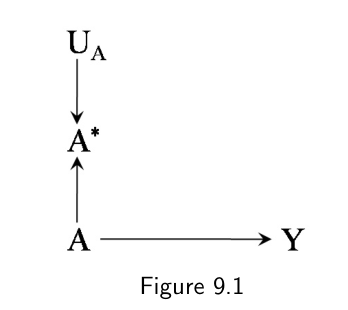
A* 的因果图。真正的处理 A 既影响结局 Y，也影响被测处理 A*；节点 UA 表示除 A 以外决定 A* 取值的全部因素。图 9.1 的因果图画出了变量 A、A* 与 Y。为简明起见，我们挑选了一个对 A 对 Y 的因果效应既无混杂也无选择偏倚的情形。真正的处理 A 同时影响结局 Y 和被测处理 A*。图中还包含节点 UA，用来代表除 A 以外决定 A* 取值的全部因素。我们把某个个体的错测值 A* 与真值 A 之差，称为该个体的 A 的测量误差。测量误差的大小与方向由 UA 中的因素决定。请注意，在因果图中加入节点 UA 并不是严格必要的，因为 UA 既不是图中其他变量的共同原因，也不是一个会被条件于的变量。我们仍然把它画进来，是为了把那些造成测量误差的因素明确地表示出来，也为了方便与接下来要讨论的因果图作直接比较。
除了处理 A，结局 Y 同样可能测错。图 9.2 的因果图加入了被测结局 Y*，以及负责 Y 的测量误差的那些因素 UY。图 9.2 刻画的是实践中极为常见的一种情形：你想算处理 A 对结局 Y 的平均因果效应，可变量 A 与 Y 或者没有被正确测量，或者根本无法被正确测量。于是，那个一心想识别出 A 对 Y 因果效应的研究者，手头只有错测版本 A* 与 Y*。
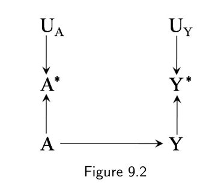
A* 与被测结局 Y* 的因果图。测量误差 UA 与 UY 相互独立，且分别与结局真值 Y、处理真值 A 无关——即两个测量误差都是非差异性的。图 9.2 还刻画了另一个情形：对处理 A 对结局 Y 的因果效应，既没有混杂也没有选择偏倚。按照我们在前几章的推理，在这种情形里关联即因果。我们可以计算 A 与 Y 之间的任何关联度量，并赋予它关于 A 对 Y 效应的因果解释。比如，关联风险比
Pr[Y* = 1 | A* = 1] / Pr[Y* = 1 | A* = 0]就等于因果风险比
Pr[Ya=1 = 1] / Pr[Ya=0 = 1]我们在前几章一直隐含着、而现在把它挑明了的假设是：关于 A 与 Y 的数据是被完美测量的。
现在考虑更现实的情形：手头只有处理与结局的错测版本 A* 与 Y*。这时，A* 与 Y* 之间的关联度量就没有保证等于 A 对 Y 的因果效应度量。关联风险比一般会不同于因果风险比 Pr[Ya=1 = 1] / Pr[Ya=0 = 1]。我们把这种情况称为存在测量偏倚或信息偏倚。在测量偏倚存在的情况下，可交换性、可阳性性与一致性这三个可识别性条件，不足以算出处理 A 对结局 Y 的因果效应。
9.2 测量误差的结构
混杂的因果结构可以概括为处理与结局存在共同原因；选择偏倚的因果结构可以概括为条件于处理与结局（或它们的祖先）的共同效应。测量偏倚则在存在测量误差时出现，但并没有哪一种单一结构能够概括测量误差。本节按两个性质——独立性与非差异性——来给测量误差的结构分类（正式定义见技术要点 9.1）。
图 9.2 的因果图分别画出了处理 A 与结局 Y 的测量误差 UA 与 UY。按照 d-分离的规则，UA 与 UY 是独立的，因为它们之间的路径被碰撞因子（A* 或 Y*）挡住了。什么样的情形会产生独立的测量误差？比如，关于用药 A 和肝毒性 Y 的信息都来自电子病历，而其中的数据录入错误是杂乱无章地发生的。但在另一些情形里，暴露与结局的测量误差可能是相依的，如图 9.3 所示。举例来说，如果这些信息是通过事后电话访谈获得的，而一个人回忆自己病史的能力（UAY）同时影响处理 A 与结局 Y 的测量，那么测量误差就是相依的。
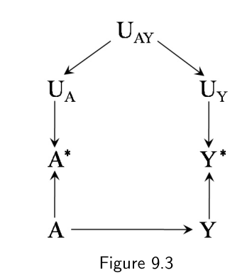
UAY 同时影响 UA 与 UY，于是处理与结局的测量误差彼此相依；但 UA 仍与 Y 无关、UY 仍与 A 无关，两个误差依然是非差异性的。图 9.2 与图 9.3 刻画的情形是：决定处理测量误差的因素 UA 与结局真值 Y 无关，决定结局测量误差的因素 UY 与处理真值 A 无关。我们于是说，处理相对于结局的测量误差是非差异性的，结局相对于处理的测量误差也是非差异性的。图 9.4 给出的是独立但差异性（differential）的测量误差的一个例子：结局真值影响了处理的测量，也就是多了一条从 Y 指向 UA 的箭头。下面我们举几个处理测量误差为差异性的例子。
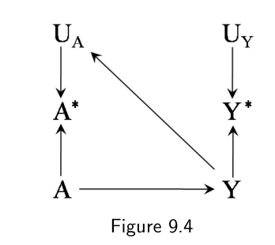
Y → UA 表示结局真值 Y 影响处理 A 的测量（回忆偏倚），UA 与 UY 仍然相互独立。假设结局 Y 不是肝毒性而是痴呆，并且用药 A 是通过访谈研究对象确定的。由于痴呆的存在会影响回忆 A 的能力，我们预期图中有从 Y 指向 UA 的箭头。同样，在一项研究孕期饮酒 A 对出生缺陷 Y 影响的调查中，如果饮酒量是事后靠回忆问出来的，我们也会预期有 Y → UA 这条箭头——因为回忆可能受妊娠结局的影响。这两个例子导致的测量偏倚通常被称为回忆偏倚（recall bias）。结构相同的另一种偏倚出现在这样的时候：用药物 A 的血药浓度 A* 来代替实际用药 A，而血药浓度是在肝毒性 Y 已经出现之后才测的——因为肝毒性会影响测到的血药浓度。由此产生的测量偏倚通常被称为反向因果偏倚（reverse causation bias）。
图 9.5 的因果图画的是独立但差异性测量误差的另一个例子：处理真值影响了结局的测量，也就是一条从 A 指向 UY 的箭头。什么情况下会出现结局的差异性测量误差？比如，医生怀疑用药 A 会导致肝毒性 Y，于是对服药的病人监测得比其他病人更密切。图 9.6 与图 9.7 画的是既相依又差异性的测量误差，它们可能由前面几种情形的组合产生。
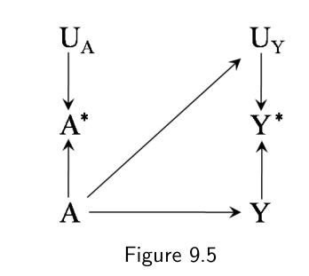
A → UY 表示处理真值 A 影响结局 Y 的测量（例如医生对服药者监测更密）。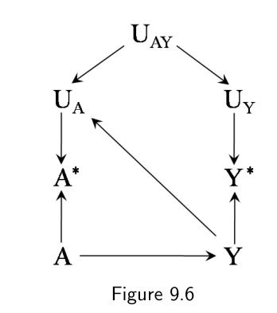
Y → UA，又保留了 UAY 造成的误差相依。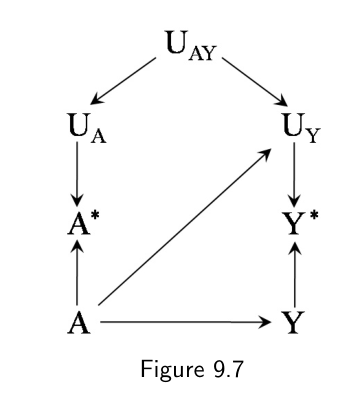
UAY 使两个测量误差相依，而 A → UY 使结局的测量成为差异性的。总结一下，我们讨论了四种类型的测量误差：独立非差异性（图 9.2）、相依非差异性（图 9.3）、独立差异性（图 9.4 与图 9.5）、相依差异性（图 9.6 与图 9.7）。测量误差的具体结构决定了哪些方法可以用来校正它。例如，当测量误差是独立非差异性时，测量误差校正方法的文献非常丰富。一般而言，测量误差校正方法依赖于建模假设与验证样本（validation sample，即关键变量被测得几乎无误差的那部分数据子集）的组合。关于测量误差校正方法本身的描述超出了本书的范围。我们的目标只是要强调：测量变量这件事本身（就像挑选个体这件事本身一样）可能引入偏倚（关于它有多强、往哪个方向，见精细辨析 9.1）。
真实的因果图需要同时表示来自混杂、选择与测量这三种偏倚。对付错误测量所致偏倚的最好办法，说到底，就是改进分析中所用变量的测量程序。
9.3 测量错误的混杂因子与对撞因子
除了处理 A 与结局 Y，混杂因素 L 本身也可能测错。混杂因素的错误测量，即便处理与结局都被完美测量，也可能导致偏倚。
看图 9.8 的因果图，它包含变量用药 A、肝病 Y 与肝炎病史 L。既往有肝炎 L 的人更不容易被开药 A，也更容易罹患肝病 Y。正如第 7 章讨论过的，处理 A 对结局 Y 的效应存在混杂，因为存在一条开放的后门路径 A ← L → Y；但在给定 L 的条件下不存在未测混杂，因为后门路径 A ← L → Y 可以通过条件于 L 被阻断。也就是说，给定混杂因素 L，已处理者与未处理者可交换，于是可以套用 IP 加权或标准化来计算 A 对 Y 的平均因果效应。基于 L、Y、A 的标准化（或 IP 加权）风险比，就等于因果风险比 Pr[Ya=1 = 1] / Pr[Ya=0 = 1]。
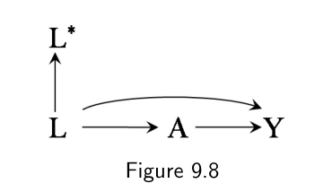
L（肝炎病史）既影响用药 A 又影响肝病 Y，后门路径 A ← L → Y 因此是开放的；但 L 本身被错测成了 L*。上述推理里隐含的假设同样是：混杂因素 L 被完美测量。假设研究者拿不到研究对象的病历，为了弄清既往是否诊断过肝炎，只能通过问卷询问。由于并非所有参与者都能准确回忆自己的病史——有人不想让别人知道，有人有记忆问题，还有人只是在填问卷时出了错——混杂因素 L 就带着误差被测量了。请注意图 9.8 并没有画出代表 L 的测量误差来源的 UL，因为这种误差的具体结构与我们的讨论无关。
研究者手里只有错测变量 L* 的数据，而没有 L 的。遗憾的是，后门路径 A ← L → Y 一般不能通过条件于 L* 被阻断。基于 L*、Y*、A 的标准化（或 IP 加权）风险比，一般会不同于因果风险比 Pr[Ya=1 = 1] / Pr[Ya=0 = 1]。我们于是说存在测量偏倚或信息偏倚。图 9.9 的因果图给出了 A 对 Y 的因果效应存在混杂、而 L 并不是 A 与 Y 共同原因的一个例子。在这里，L 的错误测量同样导致测量偏倚，因为后门路径 A ← L ← U → Y 一般不能通过条件于 L* 被阻断。
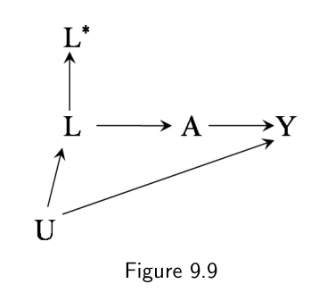
A ← L ← U → Y 经过未测的混杂因素 U。条件于错测的 L* 无法阻断这条路径。另一种看法是：把图 9.8 与图 9.9 中由混杂因素错测带来的偏倚，看成未测混杂的一种形式，而不是测量偏倚的一种形式。事实上，图 9.8 的因果图与图 7.8 的那张是等价的。你可以把 L 想作一个未测变量，把 L* 想作一个代理混杂因素（surrogate confounder，见精细辨析 7.2）。究竟该用哪套术语——未测混杂，还是混杂因素的错测——对实际用途并不重要。不过在某些情形下，使用错测变量就足以完成混杂调整。若干例子见精细辨析 9.2。
混杂因素的错误测量还可能造成表面上的效应修饰。举个例子，假设所有报告了既往肝炎诊断的研究对象（L* = 1）都确实得过肝炎，而报告没有既往肝炎诊断的人（L* = 0）中只有一半其实得过（L = 1）。也就是说，混杂因素的真值与测量值在 L* = 1 这一层上重合，在 L* = 0 这一层上不重合。再假设处理 A 对任何个体的肝病 Y 都没有效应，即锐零假设成立。当研究者把分析限制在 L* = 1 这一层时，不会存在 L 造成的混杂，因为进入分析的所有对象 L 取值相同（都是 L = 1）。于是他们在 L* = 1 层里找不到 A 与 Y 的关联。但当研究者把分析限制在 L* = 0 这一层时，混杂就来了，因为 L* = 0 这一层里既有 L = 1 也有 L = 0 的人，是两者的混合。于是研究者会发现 A 与 Y 存在非零关联，其来源是未被控制的 L 混杂。如果研究者并不知道"混杂因素在 L* = 0 层里被错测、在 L* = 1 层里没有"这件事，他们可能会天真地断定，L* = 0 层与 L* = 1 层的关联度量都可以解释为效应度量。由于这两个关联度量并不相同，研究者便会说 L* 是 A 对 Y 效应的修饰因子——尽管真正的混杂因素 L 并不存在任何效应修饰。
最后，对撞因子 C 也可能被测错。这种情形画在图 9.10 的因果图里，它与图 8.2 等价。当关心图 9.10 下 A 对 Y 的效应时，条件于错测的对撞因子 C* 一般会引入选择偏倚，因为 C* 是该对撞因子的后代，因而是处理 A 与结局 Y 的共同效应。
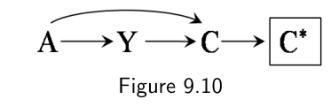
C 被错测为 C*。条件于 C* 相当于条件于 A 与 Y 的一个共同后代，会打开碰撞路径并引入选择偏倚。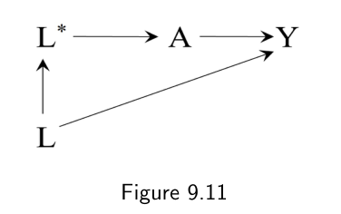
L* 完全中介了真血压 L 对治疗 A 的效应（另有 L → Y）。条件于 L 或条件于 L* 都能阻断 A 与 Y 之间的后门路径。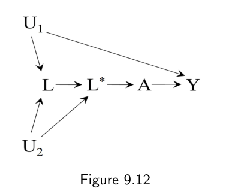
U1 直接影响结局 Y，另有 U2 同时影响 L 与 L*。此时条件于真值 L 不足以调整混杂，条件于 L* 却足够。9.4 没有测量错误变量的因果图？
在前几章画因果图时，我们隐含地作出过两个简化假设，而且它们彼此相关。在本节与下一节里，我们要把这些假设及其后果挑明。
第一个假设是：图上的所有变量都被完美测量。这个假设不现实，因为实践中处理、结局、混杂因素以及其他任何感兴趣的变量都常常免不了测量误差。在本章中，我们已经描述了因果图如何表示被错测的变量，以及在不同类型的测量误差下该怎么画。我们也考察了使用这些错测变量——它们是研究者唯一能拿到的变量——去识别因果效应会有什么后果。
举个例子，假设我们关心处理 A 对结局 Y 的效应，但只有被测的处理 A* 与被测的结局 Y* 的数据。我们已经看到，即便处理 A 对结局 Y 的效应为零、即便既无混杂也无选择偏倚，处理或结局的测量误差也可能诱发出 A* 与 Y* 之间的一个非因果关联。同样，在存在混杂的情形下，我们也看到混杂因素的测量误差可能使被测的混杂因素 L* 无法阻断某条后门路径——而如果我们拿到的是真正的混杂因素 L，那条路径本来是可以阻断的。
由于所有变量都可以预期会带一些测量误差，有人可能会说，因果图总该同时画出每个变量的真值与测量值。然而在许多情形中，测量误差的大小可能被判断为（或者被确认为）小到无关紧要。在这些情形下，一张不区分变量测量值与真值的因果 DAG 出于简明考虑反而更可取。如果在所有变量被完美测量时存在混杂与选择偏倚，那么在存在测量误差时，这些偏倚通常也会存在（尽管如精细辨析 9.2 所示，例外也是有的）。画不含测量误差的因果图，能让我们专注于混杂与选择偏倚，而不被测量问题分心。
把不含测量误差的因果图当作第一层近似，往往是有帮助的。一旦我们对完美测量下可能出现的偏倚有了较好的理解，就可以把测量误差作为额外的一层复杂度加上去。这种画因果图的两步法，帮助我们隔离混杂与选择这两个偏倚来源，而不至于被第三个来源——测量——压垮。本书采取的正是这个做法：当重点是混杂与选择偏倚时，我们就略去因果图上变量真值与测量值的区分。
我们迄今所作的第二个假设同样与测量有关，它是任何因果图的一个根本假设。我们在下一节讨论它。
9.5 许多提出的因果图包含非因果箭头
考虑图 9.13 的因果图（它与图 7.1 相同）。令 A、Y、L 分别为三个二值变量，代表给 COVID-19 患者使用的抗病毒治疗、死亡，以及肥胖（定义为体质指数大于 30）。肥胖的病人更可能接受治疗，并且在不接受治疗的情况下更可能住院。因此，专家们画出了一张从 L 分别指向 A 与 Y 的 DAG。为简明起见，我们假定是否给药这一决策只受 L 以及医生个人偏好（与图上其他任何变量都无关）的影响。同样为了简明，我们假定所有变量都没有测量误差；具体来说，L 的真值等于它的测量值 L*，所以后者不必画进图里。
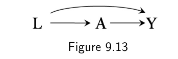
L 既指向治疗 A，又指向死亡 Y。这张图缺少 L 与 Y 的共同原因，因此并非一张真正的因果 DAG。我们此前讨论过，在因果图中处理节点的地位与其他节点不同（见 6.4 节）。原因在于：要对处理 A 对结局 Y 的效应作出有意义的定量因果推断，必须存在定义明确的、对 A 的实际干预或假想干预。否则反事实结局 Ya 就无从定义，也无法与观测到的结局 Y 联系起来，即一致性条件不成立（见第 3 章）。在我们的例子里，处理 A 所代表的干预是定义明确的，因为我们对如何给予或不给抗病毒治疗有很好的理解。因此，从 A 到 Y 有没有箭头，同样是定义明确的。
现在把讨论扩展到那些不被视为处理的节点，比如图 9.13 中的肥胖 L。正如第 3 章反复讨论的，对肥胖 L 影响死亡 Y 的干预并没有被定义清楚。因此，反事实结局 Yl 无法定义。
到目前为止，本书一直回避这个问题，但健康与社会科学中提出的许多 DAG 都包含这样的箭头：从一些并不存在定义明确干预的变量出发，比如图 9.13 中的 L。这些箭头——比如图 9.13 中的 L → Y——并没有因果解释。为了探究使用这类含有非因果箭头的 DAG 会带来什么后果，下面我们把图 9.13 讨论得更细一些。我们把 L → A 与 L → Y 两条箭头分开来看。
当专家们画出 L → A 这条箭头时，他们在恰当地使用自己的专业知识。专家们知道，医生在得知病人肥胖之后更可能给病人用药。对于 L 对 A 的效应，人们可以设想出定义明确的干预，例如向主治医生呈现一位体质指数与正在做治疗决策的那位病人不同的病人。因此，画出 L → A 是合理的。关于这一点更多的讨论，见读完下一段之后的精细辨析 9.3。
那么专家们画出 L → Y 有正当理由吗？假设专家们知道肥胖病人更容易死亡，却提不出关于 L 对 Y 效应的定义明确的干预。那么 L → Y 这条箭头就没有因果解释。在本章以及全书中，我们把"因果 DAG"这个词限定给那些所有箭头都有明确因果解释的 DAG。因此，按照这一定义、并考虑当前的知识状态，图 9.13 是一张"非因果"图。我们给"非因果"加了引号，是为了提醒读者：因果文献中大量的论文仍然把同时包含因果箭头与非因果箭头的 DAG 定义为因果图。更多讨论见精细辨析 9.4。
现在假设第二组专家对"肥胖病人更容易死亡"这一已知事实提出了另一种解释：肥胖是某个隐藏因素 H 的代理或替身，而 H 对 Y 有因果效应。相应的因果图是图 9.14（在结构上与图 7.2 相同），它包含了未测的、也可能是未知的变量 H，比如遗传因素、与脂肪储备有关的代谢因素、肠道菌群，以及大概还有一些尚未被科学发现的因素。按照图 9.14，因素 H 对治疗 A 的效应完全由 L 中介；也就是说，H 与 A 之间没有直接箭头。如果（比如）现实中用于做出治疗决策的信息只有肥胖 L，这个假定就是合理的。
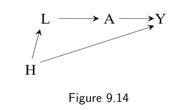
H（遗传、代谢、菌群等）既影响肥胖 L 又影响死亡 Y，而 H 对治疗 A 的效应完全由 L 中介。这是一张所有箭头都可作因果解释的 DAG。与图 9.13 一样，图 9.14 编码了两条（合理的）假设：一是存在关于肥胖 L 对治疗 A 效应的定义明确的干预——由箭头 L → A 表示；二是不存在不经由 A 的 L 对 Y 的直接效应。因此，与之对应的反事实是 Al 与 Ya，它们蕴含着存在一个关于 L 对 Y 效应的定义明确的干预，其结果为 Yl = YA^l（外层上标里的 l 是反事实 Al 的取值）。也就是说，Yl 等于 Ya，其中 a 等于反事实 Al。用技术要点 6.2 的说法，我们说 Yl 是由 Ya 与 Al 通过递归代入得到的。请注意，对于图 9.14 的因果图 Yl 是定义明确的，而对于图 9.13 不是，这之间并不矛盾——因为假定图 9.14 是因果图，就意味着图 9.13 不是：图 9.13 遗漏了 L 与 Y 的共同原因 H。另见精细辨析 9.6。
图 9.14 还编码了这样一个假设：对未知因素 H 影响 L 和 Y 的效应，都存在定义明确的干预。也就是说，图 9.14 上的箭头 H → L 与 H → Y 意味着分别存在与对 H 的定义明确干预相对应的反事实 Lh 与 Yh。我们同时 stipulate 两件事，而这里可能显得不合直觉：(i) 现有的知识水平不足以刻画 H 中的许多因素；(ii) 对 H 影响 L 与 Y 的效应都存在定义明确的干预。为了解释我们为什么可以这样做、从而在当前知识水平下把图 9.14 视为因果图，我们把 H 定义得更精确一些。
当存在一个像图 9.13 中 L 那样的变量、使得 Yl 病态定义时，我们引入 L 的一个高维父节点 H，它编码了 L 的全部未测因果决定因素——已知的与未知的都在内（除了图上已经存在的那些已知但未测的变量 U）。H 也可能是其他变量（比如 Y）的直接原因，因而是它们的父节点。我们把 L 看成 H 的低维"效应"，或者说 H 的代理：H 被记录下来以供数据分析。举例来说，在我们的肥胖例子中，连续变量体质指数 L 是那些大体未知的、调节体重的因素 H 的一个效应。在某些情形下，L 甚至可以被看作 H 的确定性（多对一）函数。
尽管我们并不知道如何干预 H 的那些（数量众多且未知的）成分中会影响 Y 的那些，我们仍然假定存在对 Y 有因果效应的因素 H。由于现有的知识并未排除"H 对 Y 的效应存在定义明确的干预"这一可能，箭头 H → Y 就获得了暂时的正当性，因此我们认为图 9.14 是一张因果图。
为清晰起见，在本节中我们区分了 H 与 U：H 指两个变量之间的未测共同原因，其中前一个变量对后一个变量的效应是病态定义的；U 指两个变量之间的未测共同原因，其中前一个变量对后一个变量的效应是定义明确的。在本书大部分地方，我们并不作这个区分，一律用 U 代表所有未测变量。
9.6 许多因果图包含非因果箭头这件事要紧吗？
我们已经看到，专家们最初提出的那张 DAG（图 9.13）不是因果 DAG，因为其中一条箭头（从 L 指向 Y 的那条）无法作因果解释。然而，尽管这张 DAG 在因果上是错的，它对于就处理 A 对结局 Y 的效应作因果推断却已经够用：无论我们使用图 9.13 这张非因果 DAG，还是图 9.14 那张因果 DAG，都会得出同一个结论——条件于 L 就能阻断 A 与 Y 之间的所有后门路径。因此，图 9.13 这张缺少节点 H、却含有非因果箭头 L → Y 的 DAG，正确地指引了数据分析，因为在计算 A 对 Y 的平均因果效应时，识别公式（在本例中是标准化或 IP 加权）所需要的全部内容就是调整 L。这个结论在意料之中，因为在两张 DAG 中都没有箭头从未测变量指向处理 A（另见精细辨析 9.2）。这个过度简化的情景说明了一个普遍问题：在现实中复杂的设定里，专家的知识很少足以画出一张所有成分都已知的因果图。
事实上，健康与社会科学中提出的许多 DAG 之所以是非因果 DAG，正是因为它们缺少使 DAG 成为因果图的那些隐藏变量 H。当我们把一个变量（比如肥胖及其后代死亡）纳入图中，却不存在关于它对后代之效应的定义明确的干预时，我们实际上是在宣告：我们的 DAG 是非因果的。不过，所关心因果效应的识别公式，有可能无论从非因果 DAG 推导、还是从带隐藏节点的因果 DAG 推导，都恰好相同。我们的例子正是如此：如果图 9.14 是正确的 DAG，那么使用图 9.13 的 DAG 也会得到同一个识别公式。
但非因果 DAG 也可能误导人。考虑图 9.15 的 DAG。宣称这张 DAG 是因果 DAG，就意味着我们相信存在关于 L 对 Y 效应的定义明确的干预（因为存在一条从 L 直接指向 Y 的箭头）。反过来，在不存在这种定义明确干预的情况下，这张 DAG 是非因果的，我们只能寄希望于基于 L 的识别公式碰巧是对的。
按照我们前面的推理，图 9.16 刻画的是：我们测到的变量 L 实际上是某个未知变量 H 的代理，而对 H 存在定义明确的干预。在图 9.15 中，A 与 Y 之间的后门路径被 L 阻断；但在图 9.16 中，它并没有被阻断。
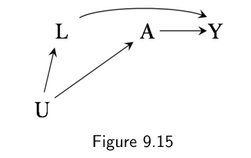
L → Y 的 DAG。宣称它是因果图，等于宣称存在关于 L 对 Y 效应的定义明确干预；U → L 与 U → A 同时存在。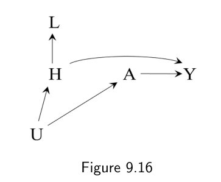
L 被识别为隐藏变量 H 的代理，U 直接指向 A。此时 A ← U → H → Y 是一条不被 L 阻断的开放后门路径。因此，如果研究者并不知道自己那个被测变量其实是代理混杂因素 L，却提出了图 9.15 而不是图 9.16，他们就会错误地得出"L 足以阻断所有后门路径"的结论，正如 9.3 节所讨论的。在画因果 DAG 时，我们必须仔细想清楚：那些恰好被测量到的变量，是否也就是那些存在定义明确干预的变量。否则，对 DAG 中非因果箭头的忽视，会让我们对自己的效应估计抱有一种虚假的信心。另一个例子见精细辨析 9.6。
从第 6 章引入因果图至今，我们已经走了很长一段路。因果 DAG 与 SWIG 是研究者用来组织并交流其因果假设的有力工具，但正如本章所看到的，这些图也受制于因果推断本身固有的那些实践约束。具体来说，在缺少关于 X 对 Y 效应的定义明确干预的情况下，因果箭头 X → Y 是无法被有意义地解释的。当我们提出一张因果 DAG 时，需要仔细思考其中每一条箭头的解释。不加科学审视地接受含有非因果箭头的 DAG，可能导致因果推断上的错误结论。这种谨慎对于刻画电路的因果图而言是不必要的（那里所有干预都是定义明确的），但对于健康与社会科学中提出的因果图却是不可或缺的。
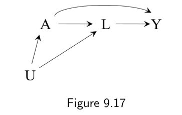
L 是 A 的后代、同时与 Y 相关，U 影响 A 并与 L 相关。因为 L 是 A 的后代，A 对 Y 的效应不可识别。前面关于"定义明确的干预"的讨论，为了教学目的作了简化。如第 3 章所讨论，没有一种干预是完美定义的，但就某些干预而言，科学共识认为它们已经足够定义明确。我们已经论证过，定量因果推断从根本上依赖的，正是这个（诚然是模糊的）"足够定义明确的干预"概念。因此，在本书余下部分中，除了若干处标记得很清楚的例外，我们将假定所有 DAG 都是严格因果的，即 DAG 上每一条箭头都代表一个足够定义明确的干预。也就是说，每一条箭头都对应着这样的一种干预：依据现有的科学知识，它可以被明确规定到不剩下任何有意义的含糊之处。几年或几十年之后，我们也许会发现，我们的信念——因而我们的因果图——当初是错的。
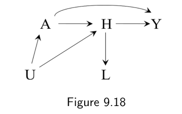
H（A → H → Y），并把 L 表示为 H 的后代。此时后门路径 A ← U → H → Y 不被任何被测变量阻断，效应仍不可识别。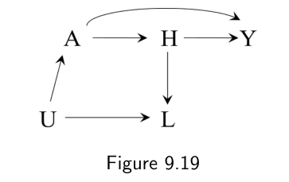
U 直接指向代理变量 L，而不指向 H。若这才是真实的因果 DAG，则 A 与 Y 之间没有开放的后门路径，效应可以识别。